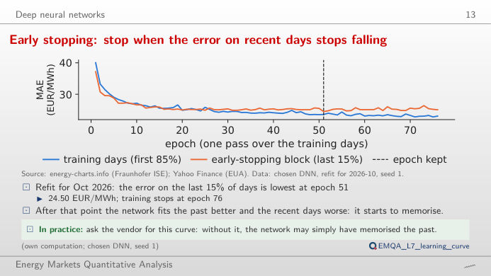
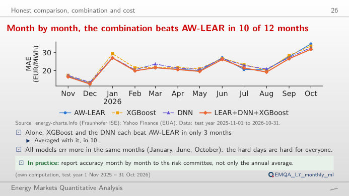
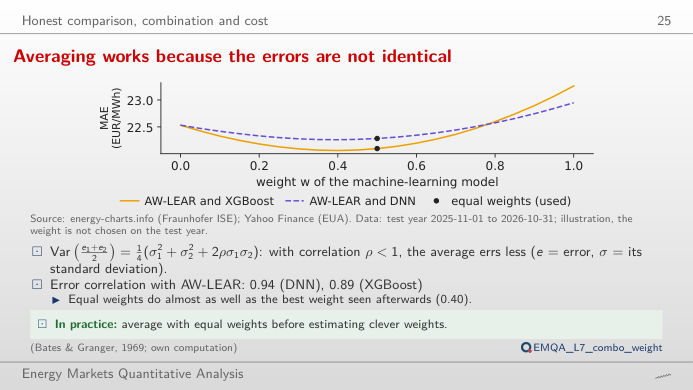
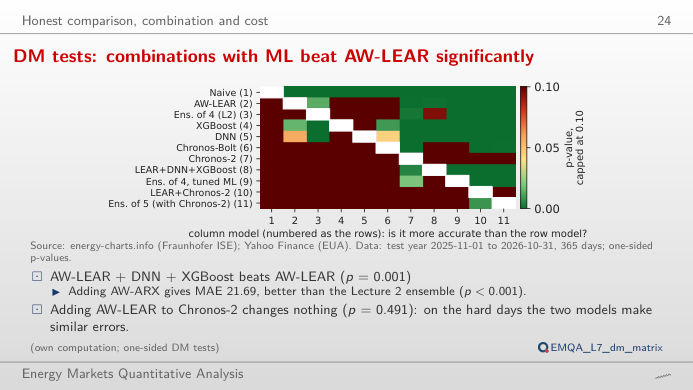
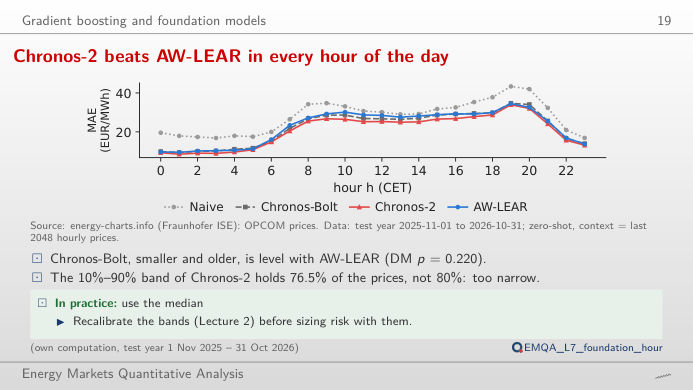
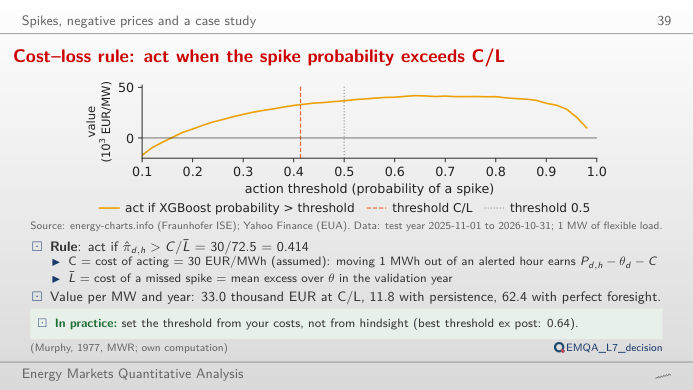

The slide of the lecture is on the left, the same figure on the right, recomputed in your browser from the saved results of the Quantlets (forecasts of the test year 1 November 2025 – 31 October 2026) and the Romanian day-ahead prices. The ▶ button moves the main parameter step by step. Abbreviations: MAE = mean absolute error; DNN = deep neural network; XGBoost = extreme gradient boosting; LEAR = LASSO-estimated autoregressive model (LASSO = least absolute shrinkage and selection operator); AW-LEAR / AW-ARX = average of LEAR / ARX (autoregressive model with exogenous inputs) forecasts over several calibration windows; GBM = gradient boosting machine; MLP = multilayer perceptron; DM = Diebold–Mariano test; ROC = receiver operating characteristic; AUC = area under the ROC curve.
Deep neural networks · Honest comparison, combination and cost · Gradient boosting and foundation models · Spikes, negative prices and a case study
Deep neural networks
Early stopping: stop when the error on recent days stops falling

Answer
No. The training error keeps falling, to 23.06 EUR/MWh at epoch 76, but the error on the recent days is lowest at epoch 51 (24.50 EUR/MWh) and is 25.07 EUR/MWh at epoch 76: after epoch 51 the network memorises the past. With a short patience the search stops too early: with 5 epochs it stops at epoch 30 and keeps epoch 25 (24.91 EUR/MWh).
Honest comparison, combination and cost
Month by month, the combination beats AW-LEAR in 10 of 12 months

Answer
In 10 of 12 months (annual MAE 21.97 EUR/MWh); XGBoost and the DNN alone beat AW-LEAR in only 3 months each. All models err most in the same months: October 2026 is the worst month of AW-LEAR (34.9 EUR/MWh). Chronos-2, a foundation model used without training on these data, has the lowest annual MAE, 20.82 EUR/MWh.
Averaging works because the errors are not identical

Answer
Hardly. The best weight seen afterwards on the test year is w = 0.40 (MAE 22.06 EUR/MWh) against 22.10 EUR/MWh with w = 0.5, and the best weight is not known in advance. Because the correlation is below 1, the average errs less than either model (23.26 for XGBoost, 22.53 for AW-LEAR). With AW-LEAR + Chronos-2 the weight seen afterwards would be w = 0.75 (20.57 EUR/MWh, against 20.81 with equal weights).
DM tests: combinations with ML beat AW-LEAR significantly

Answer
Yes: p = 0.001 (DM statistic 3.09 with 7 Newey–West lags). The test uses the 365 daily mean absolute errors; the cumulative difference on the right grows steadily through the year rather than in a few days. By contrast, adding AW-LEAR to Chronos-2 changes nothing (p = 0.491). Change the lags: the conclusion for this pair does not depend on them.
Gradient boosting and foundation models
Chronos-2 beats AW-LEAR in every hour of the day

Answer
It beats AW-LEAR in all 24 hours (annual MAE 20.82 against 22.53 EUR/MWh). Its 10%–90% band, however, contains 76.5% of the prices instead of 80%: it is too narrow and must be recalibrated (Lecture 2) before it is used for risk. Chronos-Bolt, smaller and older, is level with AW-LEAR (22.15 EUR/MWh, DM p = 0.220).
Spikes, negative prices and a case study
Cost–loss rule: act when the spike probability exceeds C/L

Answer
C/L̄ = 30/72.5 = 0.414, fixed before the test year from the costs. With XGBoost it gives 1806 alerts and 33.0 thousand EUR per MW and year; persistence gives 11.8 and perfect foresight 62.4. On this test year the threshold 0.5 happened to do slightly better (36.7) and 0.64 best: these are choices made with hindsight. Raise C: the rule asks for a higher probability before acting.
Prices: OPCOM PZU (Romanian day-ahead market), via energy-charts.info (Fraunhofer ISE), CET delivery day × 24 hours (from 1 October 2025 the hour is the mean of its four quarter-hours). Forecasts and probabilities: saved results of the Quantlets EMQA_L7_* (own computation: AW-LEAR recalibrated daily, DNN and XGBoost refitted monthly, Chronos zero-shot). Test year 2025-11-01 to 2026-10-31.